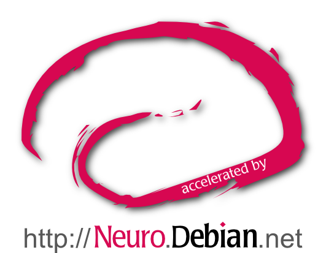
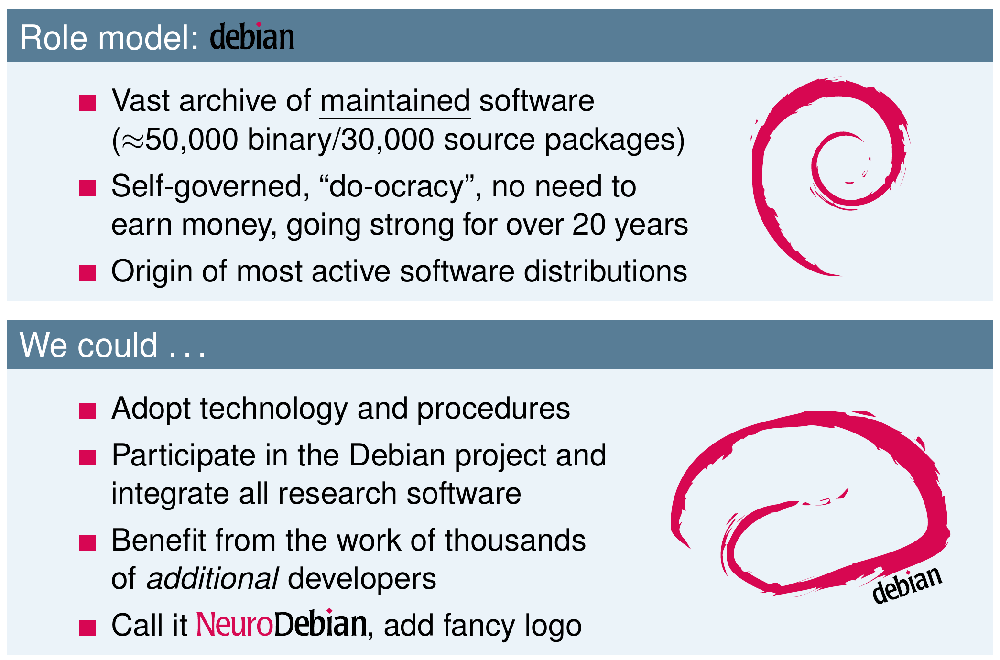
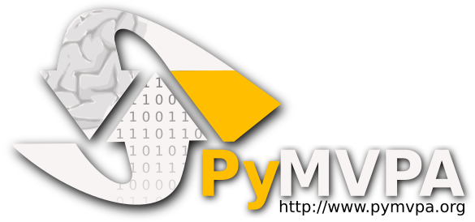
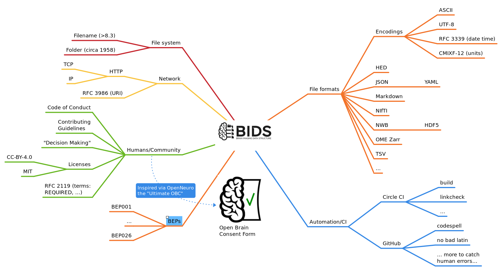
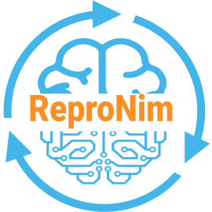
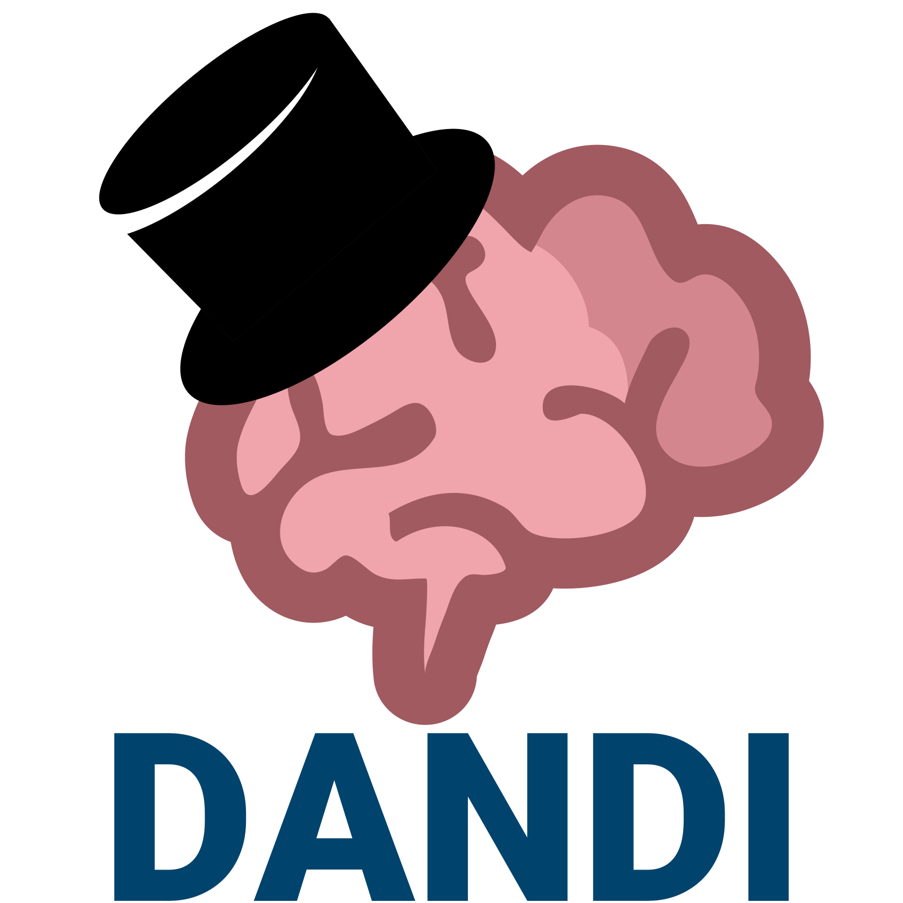

WiP Reuse, Compose, Extend, Standardize, Automate
Two Decades of RSEing Open (Neuro)Science at CON
|
Yaroslav O. Halchenko + Cody Baker, Austin Macdonald, Isaac To, Vadim Melnik — the CON team  @yarikoptic @yarikoptic
|
|
|
Center for Open Neuroscience Department of Psychological and Brain Sciences Center for Cognitive Neuroscience Dartmouth College New Hampshire, USA 
|
Live slides/Sources: https://datasets.datalad.org/centerforopenneuroscience/talks/2026-usrse-con-talk.html


Two decades, five verbs
| Reuse | join an upstream instead of writing one |
| Compose | small modules over silo'd monoliths |
| Extend | stay on as maintainer of what you depend on |
| Standardize | a common language — for humans and agents |
| Automate | if you don’t, it doesn’t happen at scale |
Same verbs, before and during the “Age of AI”.
AI just makes the fifth one — Automate — cheap enough to apply to the harness itself.
When it began for us
- 2005 — Reuse: pkg-exppsy in Debian (FSL, PyEPL) → NeuroDebian
- 2007 — Reuse + Automate: PyMVPA with tests + buildbot CI before it was common
- 2009 — Extend: NeuroDebian published in Front. Neuroinform.
- 2013 — Compose: first commit of DataLad on top of
git+git-annex - 2014 — Standardize: BIDS co-authored / Open Brain Consent born
- 2016 — Automate: ReproIn + HeuDiConv — DICOM → BIDS at the scanner, no human in the loop
- 2018 — YODA principles posted at OHBM
- 2019 — DANDI opens for neurophysiology archival; Automated dandiset ↔ DataLad mirroring + con/tinuous CI-log archival
- 2024+ — registry.datalad.org, con/duct, AnnexTube, con/serve, AI-aware tooling (con/skills, con/yolo)
Reuse — join, don't fork
The cheapest reproducible thing is the one you didn't have to build.

Born in 2009 by joining Debian, not starting a new distro
Y. O. Halchenko and M. Hanke. Open is not enough. Let's take the next step: An integrated, community-driven computing platform for neuroscience. Frontiers in Neuroinformatics, 6(00022), 2012. doi: 10.3389/fninf.2012.00022
NeuroDebian: a textbook bridge

Eventually most of it dissolved upstream into Debian Med, Debian Science, and conda-forge. A successful bridge dissolves into the commons.

Born in 2007 — Python ML library for neuroimaging,
full test suite + buildbot CI before either was common in scientific Python. M. Hanke, Y. O. Halchenko, P. B. Sederberg, et al. PyMVPA: A Python toolbox for multivariate pattern analysis of fMRI data. Neuroinformatics, 7:37–53, 2009. doi: 10.1007/s12021-008-9041-y
Today we'd contribute upstream — and we do
- PyMVPA's intent → scikit-learn / nilearn
- duecredit (scholarly-credit tracking) builds on citeproc-py — we stayed on as co-maintainers when it needed care. Continued in con/citations-collector (DOI → citation discovery, currently feeding e.g. the DANDI bibliography).
- con/duct (process-execution monitoring) builds on brainlife's
smon— we wrote it after learning ReproMan was too heavy for everyday use.
Resist monoliths, even your own.
Take home: before your next project, do one upstream-search pass.
Add pytest + a one-file CI workflow to one repo this week.
Compose — small modules, common substrate
Sandwich, don't silo.
The DataLad sandwich
Layered tech that everyone already knows
graph TB
user --> datalad[datalad get file] --> git-annex[git-annex get file] -.-> git-annex-remote-archives --> git-annex2[git-annex get --key XXX.tar.gz] -.-> git-annex-remote-datalad
datalad --> git1[git]
git-annex --> git2[git]
git-annex2 --> git3[git]
classDef green fill:#40bf4c,stroke:#333,stroke-width:1px;
classDef orange fill:#ffa200,stroke:#333,stroke-width:1px;
classDef red fill:#f44d27,stroke:#333,stroke-width:1px;
class datalad orange
class git-annex-remote-archives orange
class git-annex-remote-datalad orange
class git-annex green
class git-annex2 green
class git red
class git1 red
class git2 red
class git3 red
DataLad: distributed system for joint management of code, data, and their relationship. Halchenko et al., JOSS 2021.
DataLad extensions: domain-agnostic core, à la carte add-ons
graph LR datalad --> datalad-crawler datalad --> datalad-container datalad --> datalad-neuroimaging datalad --> datalad-osf datalad --> datalad-fuse datalad --> datalad-xnat datalad --> datalad-ukbiobank datalad --> datalad-next datalad --> ... classDef orange fill:#ffa200,stroke:#333,stroke-width:1px; classDef orangy fill:#ffc200,stroke:#333,stroke-width:1px; class datalad orange class datalad-crawler orangy class datalad-container orangy class datalad-neuroimaging orangy class datalad-osf orangy class datalad-fuse orangy class datalad-xnat orangy class datalad-ukbiobank orangy class datalad-next orangy
Extensions = separate Python packages, ride on datalad-extension-template — your domain plugs in, neuroimaging is just one of many.
Federate, don’t recentralize

registry.datalad.org indexes DataLad datasets across institutions and clouds — discovery over petabytes, no platform required.
Small acquisition & compute units
|

Each does one thing. Glue is YODA. |
Take home: wrap your next pipeline run in duct,
or pull a recipe from repronim/containers.
Convert one shared-data folder to a DataLad dataset.
Extend — stay on as maintainer
Ship pragmatic now, formalize upstream later.
Where we stayed
- Debian / Debian Med — pkg-exppsy → NeuroDebian → Debian Med & Debian Science (and on into conda-forge). The bridge dissolves into the commons.
- citeproc-py — we built duecredit on it; when its maintainer stepped back, we stepped in.
- BIDS Steering Group and BIDS-DICOM WG-16 — co-evolving the standard, not just consuming it.
- BEP028
— DataLad's ad-hoc
RUNCMDprovenance is being lifted into BIDS provenance + a BIDS prov exporter. - NWB + Kitware — sustained academic-RSE × non-academic-engineering collaboration on browse/analyze/visualize tooling.
From ad-hoc to standard, in one slide
flowchart LR RUNCMD["DataLad RUNCMD
(2015, ad-hoc JSON in commit msgs)"] --> BEP["BEP028
BIDS provenance"] RUNCMD --> EXP["bids-prov-exporter
(WiP)"] BEP --> COMMUNITY["BIDS standard
(community-owned)"] EXP --> COMMUNITY classDef orange fill:#ffa200,stroke:#333,stroke-width:1px; classDef green fill:#40bf4c,stroke:#333,stroke-width:1px; class RUNCMD orange class BEP green class COMMUNITY green
Take home: the next time you reach for your own JSON-in-a-commit-message format, ask which upstream standard it should fold back into.
Standardize — a language for HI and AI
All standards are “bad”*, but some are used.
* — D. Clunie, MICCAI 2017.
Data: BIDS & NWB
Gorgolewski, K. J., Auer, T., …, Halchenko, Y. O., …, Poldrack, R. A. (2016). The brain imaging data structure, a format for organizing and describing outputs of neuroimaging experiments. Scientific Data, 3:160044.
You've seen one BIDS dataset, you've seen them all. That's the point.
BIDS as a meta-standard

Not a wire format — a contract. Validators, BIDS-Apps, BEPs all hang off it.
Metadata: schemas as first-class citizens
- Data standards (BIDS, NWB) make data exchangeable.
- Many schema languages, one idea: describe the model, then derive everything else.
- LinkML — one source → JSON Schema, OWL/SHACL, pydantic, docs — used by the DANDI & NWB schemas, concepts.datalad.org.
- pydantic — runtime validation in Python, used widely in DANDI/NWB tooling.
- JSON Schema — the lingua franca; what BIDS extensions and the DANDI meditor read.
- SHACL — RDF-side shape constraints (the substrate
shacl-vueconsumes).
- The Model becomes a generator: validators, APIs, editor UIs, and even research-group websites all derive from it (we'll see how on the MVC slide).
- Standardize the consent too: Open Brain Consent (OBC) (born 2014; HBM 2021) gives labs and IRBs a community-vetted form instead of bespoke wording, with translations into 8+ languages.
Take home: validate one of your datasets against a community standard this month; if you maintain a schema, publish it as a real artifact (LinkML / pydantic / JSON Schema), not as “what the code happens to accept”.
Federated archives, built on the standards
|
DANDI — neurophysiology |
EMBER microscopy / behavior |
OpenNeuro — MRI/EEG/MEG |
Different domains, the same shared substrate — every layer is a community project, not a vendor lock-in:
| Layer | What we work on / contribute to |
|---|---|
| Common standards | BIDS, NWB, OME-NGFF, HED, DICOM — co-developed with the BIDS Steering Group, NWB, and DICOM WG-16 |
| Infra (object storage) | AWS S3 + MinIO for self-hosted/test deployments — same API, swap-in compatible; backed by institutional Dropbox/S3 Glacier mirrors |
| Data logistics | git + git-annex + DataLad — content-addressed, federated, no service required to read the bytes |
| Processing | Containers (ReproNim/containers, Apptainer/Singularity, OCI), BIDS-Apps (mriqc, fmriprep, …); container-aware datalad containers-run |
Federation is what lets a small RSE center reach population scale — because every layer is interchangeable and the Model lives in standards, not services.
What's in DANDI

DANDI ecosystem — integrate, don't re-implement

Reuse, in reverse
Your data is yours, even when someone else hosts it.
Pull content back into git + git-annex
|
AnnexTube YouTube videos + transcripts + comments → DataLad/git-annex. Demo: ReproTube. |
mykrok Personal knowledge bag — pulls Google & cloud silos back into a versioned local archive. |
con/serve “The Vault”: a configuration-driven archival of Slack, Zoom, GitHub, AI sessions, … into DataLad subdatasets. |
WiP — Wayback archive
(under con/serve): a local archive of the Internet Archive’s
archive of your project’s archive — in case the IA itself goes away.
Reuse-in-reverse, with a safety net.
Take home: pick one commercial silo your group depends on.
Set up a one-shot pull-back into a git+git-annex archive.
You'll thank yourself in two years.
Automate — or it doesn’t happen at scale
If a human has to remember it, it’s already broken.
Where we automate
| What gets automated | How — concretely |
|---|---|
| Building & testing the stack | PR-level CI on every DataLad change; datalad-extensions tested daily against core; git-annex built & tested daily — status emailed to a human only if red |
| CI logs + artifacts — before they expire | con/tinuous archives logs & artifacts from GitHub Actions / Travis / AppVeyor into git-annex/DataLad — a clean “pull commercial ephemera back” example, very modular by design |
| Container building & distribution | ReproNim/containers auto-rebuilds + auto-snapshots; shub mirror of singularity-hub.org |
| Acquisition → standardized data | ReproIn + HeuDiConv at the scanner; ReproStim recording all stimuli |
| Archive mirroring & smoke-testing | Dandisets auto-mirrored into DataLad on GitHub; webshots of every dandiset for timing & smoke tests; trivial-IO sweep across all dandisets |
| Validation harmonization | con/validation + dandi-cli — every release runs the full multi-validator gauntlet |
| Releases & docs | scriv + datalad/release-action; auto-deployed handbook + per-archive docs |
None of the above scales without automation. None. “If a human has to remember to do it” = “it won’t happen for the next maintainer”.
Cost: harnesses, harnesses, harnesses
- Each automation is itself code — CI YAML, hooks, nightly cron, deploy scripts, glue. Someone maintains that.
- By 2024 the harness was bigger than several of the projects under it.
This is the real reason a small RSE center was dragged toward AI assistance — not for the science, but for the maintenance of the meta-layer. - The next bullet is what the rest of this talk has been quietly setting up …
WiP — the meta-automation move: using Claude Code + con/skills + con/yolo to automate the maintenance of our automations — CI triage, PR review, dependency updates, log analysis, doc updates. The cost of writing a new automation drops — so does the cost of keeping it working when its 17 transitive dependencies break next Tuesday.
Take home: automate one repetitive chore this week (CI matrix, daily smoke test, release script). Then write down who will maintain that automation — if the answer is “me, alone, forever”, plan how AI agents take half the load.
The five verbs climb the SciOps ladder
| SciOps level (Johnson et al., 2024) | Our verb(s) | Concrete practice |
|---|---|---|
| L1 Initial | — | Ad-hoc, custom, manual. Where most labs start. |
| L2 Managed | Compose (lab-local) | Lab-wide standardized processes — YODA layout, internal pipelines. |
| L3 Defined | Reuse · Compose · Extend · Standardize | Open-source ecosystems + FAIR data + FAIR workflows. The paper’s own L3 exemplars: BIDS, NWB, DataLad/git-annex, DANDI, brainlife.io. |
| L4 Scalable | Automate | “SciOps pipelines” — semi-automated continuous workflows across experimental design, collection, processing, analysis, dissemination. Our CI + con/tinuous + auto-mirrored dandisets + ReproIn/HeuDiConv at the scanner are exactly this. |
| L5 Optimizing | Automate × AI | Closing the discovery loop — AI partnered with humans, automating experiments and the harness. Where con/skills + con/yolo + AI-aware tooling are heading. |
Johnson et al. note that most neuroscience teams sit at L1–L2; the 5 verbs are the practical climb to L3→L4, and AI is what makes L5 plausible for a small RSE center instead of just a large consortium.
For HI and AI
Same self-contained artifacts. Two readers.
Why every layer matters now
- Self-contained, well-described, openly shared → legible to HI (human investigators) and AI agents.
- STAMPED principles (Self-containment, Tracking, Actionability, Modularity, Portability, Ephemerality, Distributability) — Tracking extends naturally to AI sessions and AI↔human attribution.
- Operational-maturity counterpart: SciOps (Johnson et al., 2024). The just-shown 5-verb ↔ 5-level mapping is not coincidence: the SciOps paper itself names BIDS, NWB, DataLad/git-annex, DANDI, brainlife.io as canonical Level 3 (Defined) exemplars, and reserves Level 5 (Optimizing) for “closing the discovery loop with the assistance of artificial intelligence”.
- The AI-coding maturity ladder (companion talk) works only on top of versioned, modular, standardized artifacts — i.e. you need at least SciOps L3 before agents can do anything useful. Without it, agents thrash.
AI doesn’t change the verbs — it raises the cost of skipping them, drops the cost of the fifth verb (Automate) enough to apply it to the harness itself, and turns the gap between SciOps L4 and L5 from “requires a consortium” into “feasible for a small RSE center”.
HI ↔ AI — every project picks its own policy
| Stance | OSS exemplars | CON / adjacent example | SciOps fit / what it relies on |
|---|---|---|---|
| 1. Reject any AI-generated content | Zig, Krita, Clojure, QEMU; in practice git-annex (Joey Hess’s “policy” is famously a satirical Feb-30 joke) | git-annex upstream contributions — pure-HI commits | L3 floor; AI use, if any, stays ephemeral — never enters the tracked artifact |
| 2. Accept with disclosure (AI-assisted ok; must be marked) | NumPy, Kubernetes, Linux kernel, Django | DataLad, DANDI — HI commits; AI may have helped; Co-Authored-By: Claude… trailers, @pytest.mark.ai_generated |
L3 → L4; leans hardest on STAMPED T (Tracking) — provenance is non-negotiable |
| 3. Spec-driven AI-generated (HI specs, AI writes, HI reviews) | Increasingly common; rare as declared upstream policy | AnnexTube, mykrok, con/citations-collector, parts of dandi-cli (LAD specs + AI-generated tests) | L4; leans on T + Actionability + Modularity — the spec is the contract |
| 4. Autonomous agents in the loop | Active research everywhere; rarely a declared production policy | con/skills + con/yolo workflows for triage, PR review, dep updates | L5 (Optimizing); all of STAMPED + the harness itself becomes the type-checker |
Common ground (all four stances): AI cannot be an author (ICMJE Jan 2026); humans retain full responsibility; AI use must be disclosed in the artifact itself (commit trailer, methods section, acknowledgments). The STAMPED Tracking principle is what makes that mechanical instead of aspirational.
Survey of declared OSS stances: melissawm/open-source-ai-contribution-policies — community-maintained catalog of project policies, three+one buckets: Accept / Restrict / Reject / Ongoing.
Take home: declare your project’s stance, in writing, before someone files a PR with an undisclosed Claude trailer. “We haven’t decided” is itself a policy — just a bad one.
Why it composes — MVC at the stack scale
Models, Controllers, Views — just bigger than usual.
The five verbs (Reuse / Compose / Extend / Standardize / Automate) are practices.
This is the architecture they keep producing.
Models — multiple, layered, standard
| Layer | Examples |
|---|---|
| Dataset layout — how files live together | BIDS; YODA; BIDS-like DuckDB hive in mykrok & AnnexTube |
| Per-file — how one file is encoded | NWB; NIfTI; TSV / Parquet / HDF5 / Zarr; DICOM |
| Metadata schema | LinkML, pydantic, JSON Schema, SHACL — used in concepts.datalad.org, the DANDI / NWB / BIDS schemas, BIDS extensions |
| Storage — bytes-on-disk, distributed | git + git-annex + DataLad as a content-addressed model(S3, IPFS, NFS, … appear as remotes) |
Multiple models, but each is standardized and inspectable. Pick the one your problem needs; the others stay out of the way.
Views — humans, agents, machines
| Audience | View(s) |
|---|---|
| Browse-the-archive humans | datasets.datalad.org, DANDI, OpenNeuro, EMBER; mykrok / ReproTube web UIs |
| Tabular / ad-hoc analysis | Datasette on the web; VisiData locally; pandas / polars / DuckDB |
| Programmatic (humans + agents) | PyBIDS, matlab-bids, pynwb; datalad.api; archive REST APIs; fsspec; FUSE |
| External services that just plug in | brainlife.io, CONP, CBRAIN, Kitware NWB tooling, MetaCell NWB Explorer |
| Schema-driven UIs — the View generated from the Model |
vjsf → DANDI meditor (JSON Schema→form); shacl-vue from psychoinformatics-de — SHACL→forms and entire research-group websites |
| Long-form narrative | handbook.datalad.org; per-archive docs; the standards’ specs themselves |
Same Model materializes many Views — archive UIs, editor forms, websites, the spec itself.
See M. Hanke et al.,
LinkML metadata-driven workflow
(ReproTube; YouTube).
Controllers — small, single-purpose
| Job | Example controller |
|---|---|
| Acquisition → standardized layout | ReproIn, HeuDiConv (DICOM→BIDS), NeuroConv (raw→NWB), con/nwb2bids (NWB→BIDS), ReproStim |
| Reproducible execution | datalad run / containers-run; con/duct; ReproMan |
| Logistics — move/get/store data | git-annex special remotes (rclone, S3, datalad-archives, …) |
| Data → derived data | BIDS-Apps (mriqc, fmriprep, …); DataLad crawler |
| Validation (and harmonization) | bids-validator (+ HED), pynwb, zarr, nwbinspector, OME-Zarr, LinkML validators — harmonized via con/validation (deployed in dandi-cli) into one validation-result Model |
Each does one thing. They couple to the Model, not to each other.
The punchline: pick any cell — Model, View, or Controller —
and swap it out. The rest still works.
That is why the stack composes, why our code stays small,
and why an HI or an AI agent can pick it up cold.
Contrast: a typical academic “service-tied UI” (LIMS / ELN / bespoke Flask portal) welds View to Controller to a running backend — lose the server, lose the data. Cf. Cockburn’s Hexagonal Architecture / Ports & Adapters (2005) and Evans’s Smart UI anti-pattern.
Your Monday checklist
Pick one. Today is fine.
6 things to copy on Monday
- Reuse: do one upstream-search pass before your next project, and add
pytest+ a one-file CI workflow to one repo this week. - Reuse → Extend: file an ITP at Debian Med or open a conda-forge feedstock for one tool you currently distribute by URL.
- Compose: convert one shared-data folder into a DataLad dataset; wrap one pipeline run in
duct. - Standardize: validate one of your datasets against a community standard.
- Automate: automate one repetitive chore (CI matrix, daily smoke test, release script, or archival pull-back via con/tinuous) — then write down who maintains that.
- Reuse-in-reverse: pull content back from one commercial silo your group depends on into a
git+git-annexarchive.
None requires neuroscience. All work today.
Acknowledgements
|
Funders


Collaborators
  |

Thank you!
Reuse. Compose. Extend. Standardize. Automate.
Slides: datasets.datalad.org/…/2026-usrse-con-talk.html — CC-BY-SA